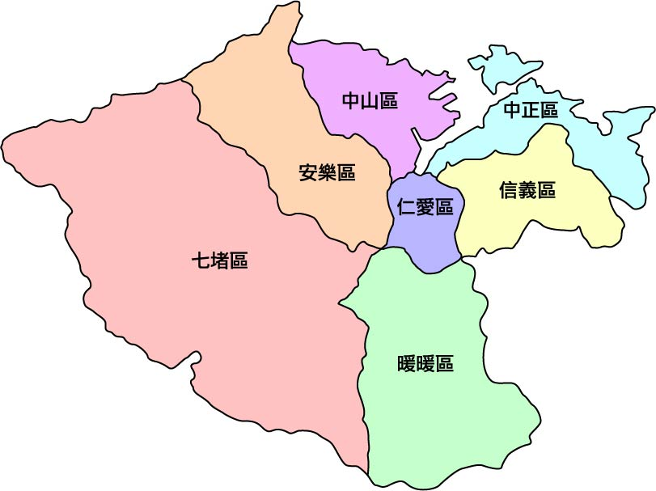
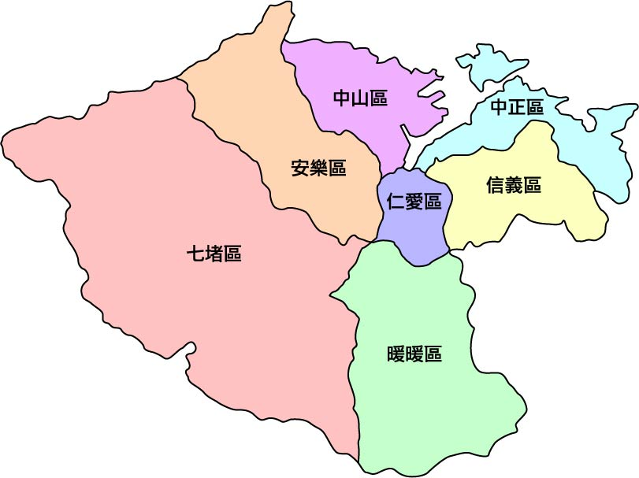

基隆市
憑藉著歷史遺跡與依山傍海的自然資源，基隆也是北臺灣觀 光地之一，並擁有廟口夜市、巷弄小吃、豐富海產等獨具港都特色的美食文化!
內容取自---WIKI
設計該網站的宗旨，即是讓使用者能快速的尋找基隆在地的美食!不再辛苦地上網搜尋分散的所在地，讓您能直接前往!
基隆總共有分7個地區，我們會挑選當地必吃的美食，給各位來訪的用戶~
憑藉著歷史遺跡與依山傍海的自然資源，基隆也是北臺灣觀 光地之一，並擁有廟口夜市、巷弄小吃、豐富海產等獨具港都特色的美食文化!
設計該網站的宗旨，即是讓使用者能快速的尋找基隆在地的美食!不再辛苦地上網搜尋分散的所在地，讓您能直接前往!
基隆總共有分7個地區，我們會挑選當地必吃的美食，給各位來訪的用戶~
